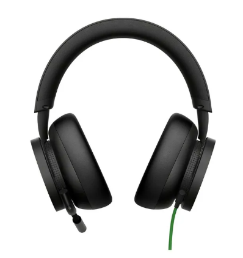
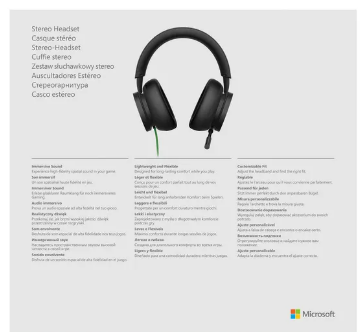
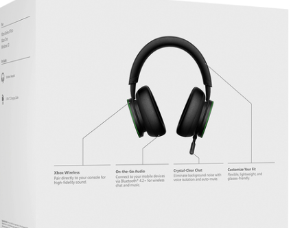

Descripción:
El Xbox One Over-Ear Headset es un auricular diseñado para ofrecer un sonido envolvente y comunicación clara en tus juegos. Con almohadillas de copa completa para un ajuste cómodo durante largas sesiones de juego, este headset es ideal para disfrutar de audio de alta calidad y para mantener conversaciones sin interferencias. Su micrófono flexible y su conexión fácil con Xbox One y PC lo convierten en un accesorio esencial para los gamers que buscan una experiencia de audio profesional.
Características:
- Sonido estéreo de alta calidad para una experiencia inmersiva.
- Almohadillas de copa completa para un ajuste cómodo y aislamiento de ruido.
- Micrófono flexible para comunicación clara.
- Conexión de 3,5 mm, compatible con Xbox One y PC.
- Control de volumen y micrófono en línea para fácil ajuste.
- Diseño ligero y cómodo, ideal para largas sesiones de juego.
Imágenes del OVER EAR



Especificaciones del OVER EAR
- Conexión: 3,5 mm (consolas Xbox One y PC)
- Tipo de auricular: Over-ear
- Micrófono: Flexible y ajustable
- Control de volumen y micrófono integrado
- Almohadillas: Suaves y acolchonadas para mayor comodidad
- Longitud del cable: 1,2 m